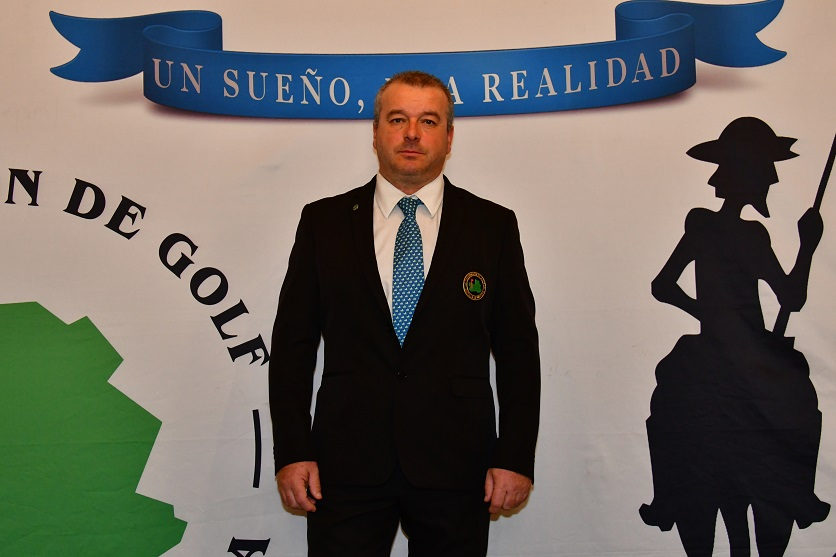

Mensaje institucional del presidente de la Federación de Golf de Castilla-La Mancha.

Estimados amigos y aficionados al golf:
Es para mí un honor y una satisfacción dirigirme a vosotros como presidente de la Federación de Golf de Castilla-La Mancha. Nuestra región cuenta con una tradición golfística que crece año tras año, y desde esta institución trabajamos cada día para que ese crecimiento sea sólido, inclusivo y sostenible.
Castilla-La Mancha es tierra de grandes paisajes, y sus más de 40 clubes federados ofrecen una experiencia única tanto para el jugador experimentado como para quien se acerca por primera vez a este deporte. Nuestro compromiso es garantizar la igualdad de oportunidades, el rigor competitivo y la promoción del golf en todas las categorías: masculino, femenino, juvenil, senior, pitch & putt, golf adaptado y todas las modalidades que enriquecen nuestra actividad federativa.
Durante esta temporada 2026 hemos ampliado el calendario de torneos, reforzado los programas de tecnificación para jóvenes promesas y establecido nuevos acuerdos de colaboración con instituciones y patrocinadores que hacen posible que el golf siga creciendo en nuestra comunidad. La Escuela de Golf FGCLM es un ejemplo de ese esfuerzo: un espacio abierto a todos, donde cualquier persona puede iniciarse en este deporte con el apoyo de profesionales titulados.
Os invito a participar activamente en la vida federativa, a federaros si aún no lo habéis hecho, y a disfrutar de todo lo que el golf de Castilla-La Mancha tiene para ofreceros. Juntos, seguiremos haciendo grande este deporte en nuestra tierra.
Un cordial saludo.